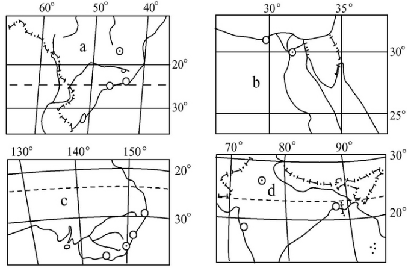

None - Fade - Slide - Convex - Concave - Zoom
选择班级
幻灯片样式
Black (default) -
White -
League -
Sky -
Beige -
Simple
Serif -
Blood -
Night -
Moon -
Solarized
读我国某地一河流流量与含沙量逐月变化图，完成1、2题
1.该河流春汛的主要补给水源是( )
A.冰川融水
B.季节性积雪融水
C.雨水
D.地下水
读我国某地一河流流量与含沙量逐月变化图，完成1、2题
2.该河流主要分布在( )
A.东北地区
B.华北地区
C.江淮地区
D.华南地区
3.下面三种陆地水体相互转化关系示意图中，若在鄱阳湖区进行大规模围湖造田，将导致箭头a、b流量的变化趋势是
2.该河流主要分布在( )
A. a变大
B. a变小
C. b变稳定
D. b在枯水期变大
新加坡《联合早报》2010年7月18日发表评论认为，尽管三峡大坝迎来建成后最严峻的洪峰考验，但这也可能让备受争议的三峡大坝获得一次“正名”的机会，下图为水循环略图，读图完成4、5题。
4.在水循环过程中，三峡大坝影响 的主要环节是( )
A.①
B.②
C.③
D.④
5.1998年长江流域发生特大洪水，与之有关的主要环节是
A.①
B.②
C.③
D.④
读水循环示意图，完成6、7题。
6.下列实现着图中①的功能的是( )
A.长江
B.副热带高气压带
C.我国的夏季风
D.我国的冬季风
7.关于水循环深刻而广泛地影响着全球地理环境的原因，叙述正确的是( ) ①它是地球上最活跃的能量交换过程之一，能缓解不同纬度热量收支不平衡的矛盾 ②它是地球上最活跃的物质循环过程之一，是联系海陆之间的主要纽带 ③它是自然界最富动力作用的循环运动，但它不能塑造地表形态 ④它对地表太阳能可起到传输作用，但不能起吸收和转化的作用
A.①②
B.③④
C.②④
D.①④
2010年11月5日，“陆海统筹海水西调高峰论坛”在乌鲁木齐举行。海水西调的基本思路为：沿下图所示路线将渤海海水输送至新疆，形成人造的海水河、湖，通过水资源的良性循环，达到改善西北地区生态环境的目的。结合下图回答8、9题。
8.在我国四大临海中，选择西调“渤海”之水的理由包括 ①渤海离新疆近 ②渤海水量最大 ③渤海污染程度最低 ④渤海盐度较低
A.①③ B.①④ C.②③ D.②④9.通过海水西调改善西北地区生态环境，主要利用的水循环环节为( )
A.地表径流、地下径流
B.水汽输送、降水
C.下渗、地下径流
D.蒸发、降水
读大西洋洋流分布示意图,完成10、11题。
10．洋流分布规律正确的是( )
A．中低纬大陆东岸为寒流
B．中高纬大洋西侧为暖流
C．北半球中低纬海区洋流呈顺时针流动
D．南半球中高纬海区洋流呈逆时针流动
11．洋流对地理环境的影响表现在
A．①海区附近有世界著名渔场分布
B．③海区容易形成海雾
C．②洋流沿岸温带海洋性气候广布
D．使海洋污染范围不变
读某大洋某季节局部洋流分布示意图，回答12、13题。
12.图示洋流环流系统最有可能出现的月份是( )
A.3月
B.6月
C.10月
D.12月
13.①海区洋流向东流的主要动力是( )
A.东北信风
B.东北季风
C.西南季风
D.东南信风
14.读某区域部分地理信息图，甲海域有一大范围渔场，若用洋流剖面示意图来解释其成因，应选( )
A.A
B.B
C.C
D.D
15.(2010·安徽文综)目前我国每年需要通过远洋货轮进口大量铁矿石。下图所示区域是我国重要的铁矿石进口地。7月份将该地铁矿石运往上海，货轮在航行过程中总体上( )
A.顺风顺水
B.顺风逆水
C.逆风顺水
D.逆风逆水
读海陆分布示意图，若阴影部分为某大洋，据图判断16～18题。
16.以下说法正确的是( )
A.①至③的洋流受信风带影响形成
B.②至①的洋流受风带影响形成
C.①比③的海水温度高
D.②比④的海水温度高
17.若①处附近有世界性大渔场，在此交汇的洋流可能是
A.北太平洋暖流与拉布拉多寒流
B.北大西洋暖流与东格陵兰寒流
C.日本暖流与千岛寒流
D.北赤道暖流与加利福尼亚寒流
18.若阴影部分是太平洋，其沿岸地区的气候类型正确的是
A.①地沿岸为温带海洋性气候
B.②地沿岸气候为地中海气候
C.③地沿岸为温带季风气候
D.④地沿岸气候为热带沙漠气候
读a、b、c、d四地所在国家示意图，回答19～21题。
19.四国中，多年平均径流量最多的国家为( )
A.A
B.B
C.C
D.D
20.图中四个国家最需要推广普及农业节水技术的是( )
A.A
B.B
C.C
D.D
21.造成a、b两国多年平均径流总量出现较大差异的原因包括 ( ) ①两国气候类型的差异 ②两国人口数量的差异 ③两国经济发展水平的差异 ④两国国土面积的差异
A.①②
B.②③
C.③④
D.①④
22.近年来我国其他城市的水价也有不同程度的上涨，水价上涨的主要目的是( )
A.促进节约用水
B.与国际水价接轨
C.增加国家税收
D.增加地方财政收入
23.北京市是一个资源型缺水城市，而且近几年无法有根本性改变，北京市缺水的原因中正确的是( ) ①地表径流量少 ②过量开采地下水 ③水污染严重 ④人口增长，经济发展，用水量大
A.①②③
B.①③④
C.②③④
D.①②④
中新网2010年3月22日报道，今年3月22日是第18个世界水日，也是第23届中国水周的第一天。今年世界水日的主题定为“保障清洁水源，创造健康世界”。据此回答24、25题。
24.近几年来世界上感到水资源不足的国家明显增多，其主要原因是( )
A.温室效应导致全球气候变暖，蒸发加剧
B.森林被大量砍伐，森林调节气候的作用减弱
C.人口增加，工农业迅速发展，需水量大增
D.水资源的数量是有限的，用一点就少一点
25.水资源不足是制约我国北方经济发展的“瓶颈”，解决北方缺水的可行措施是( ) ①大面积人工降雨 ②跨流域调水 ③因地制宜，植树种草，退耕还林，退耕还牧 ④节约用水、合理用水、防治水污染 ⑤人工措施融化西北冰川
A.①②③
B.②③④
C.②③④⑤
D.①②③④⑤